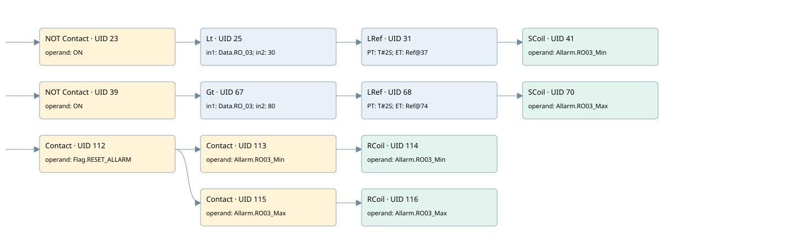

ro03
allarms 3 · 검색 색인 순서 17 · 원본 내부 NID 추정 17
백업 PLF 원본의 3183793 바이트 위치에서 복원한 XML. 검색 문서 1995의 객체 키 16102200816b000000000000와 연결했다. 이름 해석 15/17개. 남은 RefId는 상수 또는 미해석 참조다.
연결 구조 다시 그리기
원본 Part/PCon/Wire를 이용한 연결도다. TIA 화면의 래더 배치 또는 실행 결과를 재현한 그림은 아니다. 핀 연결은 아래 표와 원본 XML을 기준으로 읽는다. 노드 위에 마우스를 두면 피연산자 이름을 볼 수 있다.

접점·코일·블록과 피연산자
| Part UID | Gate | Negated 핀 | 연결 피연산자 |
|---|---|---|---|
| 23 | Contact | operand | operand = ON |
| 25 | Lt | in1 = Data.RO_03; in2 = 30 | |
| 31 | LRef | 호출 참조: RefId 149; PT = T#2S; ET = RefId (RefId 없음) / ORef UID 37 | |
| 41 | SCoil | operand = Allarm.RO03_Min | |
| 39 | Contact | operand | operand = ON |
| 67 | Gt | in1 = Data.RO_03; in2 = 80 | |
| 68 | LRef | 호출 참조: RefId 149; PT = T#2S; ET = RefId (RefId 없음) / ORef UID 74 | |
| 70 | SCoil | operand = Allarm.RO03_Max | |
| 112 | Contact | operand = Flag.RESET_ALLARM | |
| 113 | Contact | operand = Allarm.RO03_Min | |
| 114 | RCoil | operand = Allarm.RO03_Min | |
| 115 | Contact | operand = Allarm.RO03_Max | |
| 116 | RCoil | operand = Allarm.RO03_Max |
접점 경로를 펼친 조건식
Contact·O/A·비교기의 원본 연결을 읽기 쉽게 펼친 보조 해석이다. POWER는 전원 레일 시작을 뜻한다. 호출 블록·에지·타이머의 내부 동작과 다중 쓰기 순서는 이 표로 실행 검증하지 않았다. 미해석 핀과 RefId는 원문 연결표에서 확인한다.
| UID | 동작 | 대상 | 원본 접점 경로 | 내용 |
|---|---|---|---|---|
| 41 | SCoil | Allarm.RO03_Min | LRef UID 31.Q (블록 동작 확인) | 조건 성립 시 Set |
| 70 | SCoil | Allarm.RO03_Max | LRef UID 68.Q (블록 동작 확인) | 조건 성립 시 Set |
| 114 | RCoil | Allarm.RO03_Min | (Flag.RESET_ALLARM AND Allarm.RO03_Min) | 조건 성립 시 Reset |
| 116 | RCoil | Allarm.RO03_Max | (Flag.RESET_ALLARM AND Allarm.RO03_Max) | 조건 성립 시 Reset |
원본 배선 연결
| Wire UID | 동일 Wire 연결 끝점 |
|---|---|
| 21 | Powerrail {} ↔ Part 23.in ↔ Part 39.in ↔ Part 112.in |
| 22 | ORef 24 (ON) ↔ Part 23.operand |
| 30 | Part 23.out ↔ Part 25.pre |
| 26 | ORef 27 (Data.RO_03) ↔ Part 25.in1 |
| 28 | ORef 29 (30) ↔ Part 25.in2 |
| 33 | Part 25.out ↔ Part 31.IN |
| 34 | ORef 36 (T#2S) ↔ Part 31.PT |
| 43 | Part 31.Q ↔ Part 41.in |
| 35 | Part 31.ET ↔ ORef 37 (RefId (RefId 없음)) |
| 44 | ORef 45 (Allarm.RO03_Min) ↔ Part 41.operand |
| 32 | ORef 40 (ON) ↔ Part 39.operand |
| 42 | Part 39.out ↔ Part 67.pre |
| 72 | ORef 77 (Data.RO_03) ↔ Part 67.in1 |
| 76 | ORef 78 (80) ↔ Part 67.in2 |
| 71 | Part 67.out ↔ Part 68.IN |
| 80 | ORef 73 (T#2S) ↔ Part 68.PT |
| 81 | Part 68.Q ↔ Part 70.in |
| 82 | Part 68.ET ↔ ORef 74 (RefId (RefId 없음)) |
| 83 | ORef 75 (Allarm.RO03_Max) ↔ Part 70.operand |
| 123 | ORef 117 (Flag.RESET_ALLARM) ↔ Part 112.operand |
| 124 | Part 112.out ↔ Part 113.in ↔ Part 115.in |
| 125 | ORef 118 (Allarm.RO03_Min) ↔ Part 113.operand |
| 126 | Part 113.out ↔ Part 114.in |
| 127 | ORef 119 (Allarm.RO03_Min) ↔ Part 114.operand |
| 128 | ORef 120 (Allarm.RO03_Max) ↔ Part 115.operand |
| 129 | Part 115.out ↔ Part 116.in |
| 130 | ORef 121 (Allarm.RO03_Max) ↔ Part 116.operand |
식별자 해석 근거 17개
| ORef UID | RefId | 이름 | IdentXmlPart 파일 | 해석 방법 |
|---|---|---|---|---|
| 24 | 1 | ON | 0686-IdentXmlPart.xml | UID/RID + search-text + NID agreement |
| 27 | 147 | Data.RO_03 | 0684-IdentXmlPart.xml | UID/RID + search-text + NID agreement |
| 29 | 148 | 30 | 0683-IdentXmlPart.xml | literal candidate: UID/RID/NID + nearby named declarations + search-text agreement |
| 36 | 151 | T#2S | 0683-IdentXmlPart.xml | literal candidate: UID/RID/NID + nearby named declarations + search-text agreement |
| 37 | (RefId 없음) | 미해석 RefId | 식별 선언 원본 참조 | 미해석 |
| 45 | 153 | Allarm.RO03_Min | 0684-IdentXmlPart.xml | UID/RID + search-text + NID agreement |
| 40 | 1 | ON | 0664-IdentXmlPart.xml, 0686-IdentXmlPart.xml | UID/RID + search-text + NID agreement |
| 77 | 147 | Data.RO_03 | 0684-IdentXmlPart.xml | UID/RID + search-text + NID agreement |
| 78 | 79 | 80 | 0683-IdentXmlPart.xml | literal candidate: UID/RID/NID + nearby named declarations + search-text agreement |
| 73 | 151 | T#2S | 0683-IdentXmlPart.xml | literal candidate: UID/RID/NID + nearby named declarations + search-text agreement |
| 74 | (RefId 없음) | 미해석 RefId | 식별 선언 원본 참조 | 미해석 |
| 75 | 160 | Allarm.RO03_Max | 0684-IdentXmlPart.xml | UID/RID + search-text + NID agreement |
| 117 | 24 | Flag.RESET_ALLARM | 0684-IdentXmlPart.xml | UID/RID + search-text + NID agreement |
| 118 | 153 | Allarm.RO03_Min | 0684-IdentXmlPart.xml | UID/RID + search-text + NID agreement |
| 119 | 153 | Allarm.RO03_Min | 0684-IdentXmlPart.xml | UID/RID + search-text + NID agreement |
| 120 | 160 | Allarm.RO03_Max | 0684-IdentXmlPart.xml | UID/RID + search-text + NID agreement |
| 121 | 160 | Allarm.RO03_Max | 0684-IdentXmlPart.xml | UID/RID + search-text + NID agreement |
검색 코드 보조 자료
참조 명칭을 찾기 위한 자료이며 실행 순서나 AND/OR 관계는 위 연결표로 확인한다.
"on" "data".ro_03 30 ton "ro03_min" t#2s "allarm".ro03_min "on" "data".ro_03 80 ton "ro03_max" t#2s "allarm".ro03_max "flag".reset_allarm "allarm".ro03_min "allarm".ro03_min "allarm".ro03_max "allarm".ro03_max